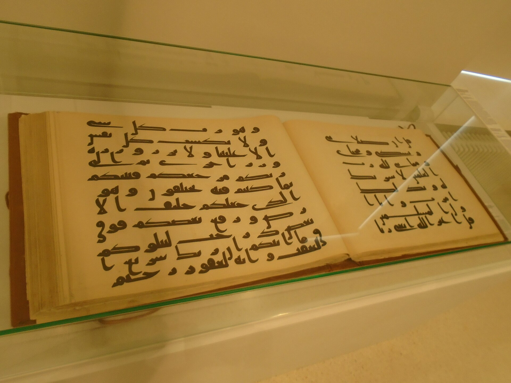
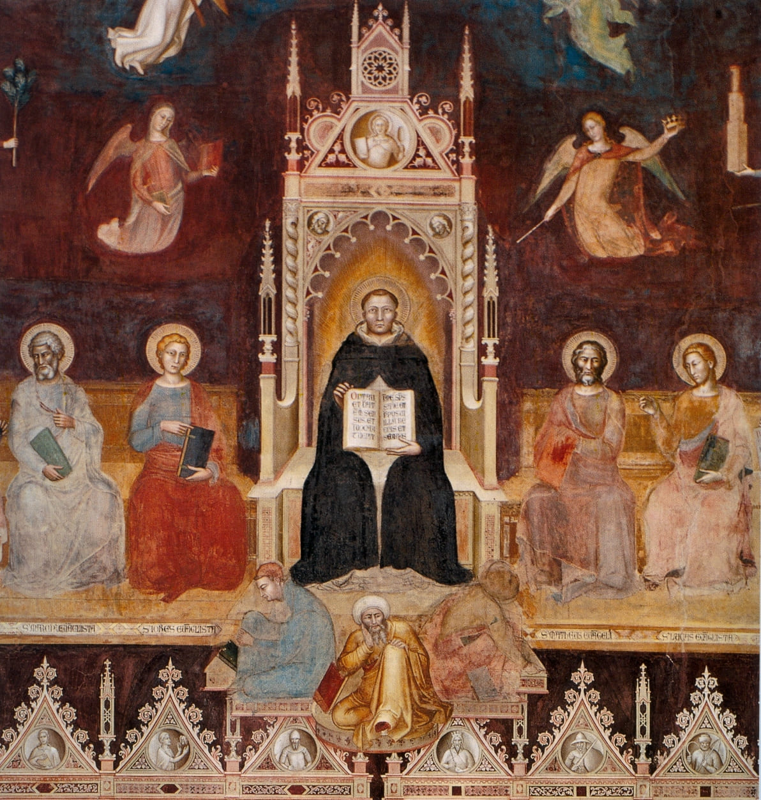

Con dos excepciones declaradas. Y una honestidad final: el título de esta serie es una tesis, no un hecho — y la generación siguiente la está reabriendo.
Póngase en fila el vocabulario. Hebreo: nefesh, garganta; ruaḥ, viento y aliento; neshamah, lo que entra por la nariz. Acadio: napištu, la misma raíz que nefesh. Griego: pneuma, de pnein, soplar. Latín: anima y spiritus, de spirare, respirar. Árabe: nafs y rūḥ. Sánscrito: ātman, que en el Ṛgveda todavía significa aliento.
La conclusión se escribe sola, y por eso hay que escribirla con cuidado: las palabras del alma en las lenguas de las Escrituras son palabras del aire. No hay ninguna que nazca significando «sustancia inmaterial». Todas empiezan diciendo que alguien respira.
Ahora bien, esta entrega cierra una serie que se ha pasado cinco capítulos distinguiendo lo que es consenso de lo que es hipótesis. No vamos a redondear en la última. Hay dos excepciones a ese cuadro tan limpio, y las dos son importantes.
La primera es psychē, y es más fina de lo que parece. Su etimología apunta, probablemente, a psýchō, «soplar» — aunque el mismo verbo significa también «enfriar», y cuál de los dos sentidos es primario está discutido; y la raíz indoeuropea que se le ha propuesto, Beekes la considera poco convincente. Pero el problema verdadero es otro, y es de uso, no de etimología: psychē nunca significó «aliento» en griego, ni siquiera en Homero. Si esta serie hubiera escrito en algún momento que «psychē significa aliento», habría escrito algo falso.
La segunda es germánica, y es una excepción entera. El grupo saiwalō —gótico saiwala, inglés antiguo sāwol de donde soul, alto alemán antiguo sēla de donde Seele, neerlandés ziel, nórdico antiguo sála— no se explica como metáfora del aliento. Su origen es desconocido, y así lo dice el diccionario etimológico de referencia del alemán, el de Pfeifer, en dos palabras: Herkunft unbekannt.
Se han propuesto dos hipótesis y ninguna convence. Una la deriva de See, «lago, mar» —«lo que viene del mar»—, apoyándose en la creencia germánica de que las almas habitaban en el agua antes de nacer y después de morir; y la propia entrada de Pfeifer añade inmediatamente que «queda dudoso si esa creencia estuvo generalmente difundida». La otra la declara palabra tabú no explicada. La entrada inglesa de Etymonline remata el asunto con una frase que merece ser epígrafe: distinguir soul de spirit «es un asunto que más vale dejar a los teólogos».
Y esa excepción, bien mirada, refuerza la tesis en vez de debilitarla. Si las lenguas germánicas tenían una palabra propia para el alma cuyo origen no es el aliento, y sin embargo el vocabulario europeo del alma acabó siendo el del aliento, es porque ese vocabulario se construyó traduciendo. Etymonline lo registra con precisión: el uso más antiguo de spirit en inglés procede sobre todo de pasajes de la Vulgata, donde la palabra latina traduce el griego pneuma y el hebreo ruaḥ. Y en la teología cristiana de época imperial, spiritus desplazó a animus como equivalente habitual de pneuma.
El vocabulario europeo del alma no nace de una intuición autóctona. Nace en el acto de traducir la Biblia.
Garganta; viento y aliento sin línea divisoria; lo que entra por la nariz. Del aliento.
Vida, aliento, garganta — las tres cosas, como en hebreo. La misma raíz semítica. Del aliento.
La misma raíz que nefesh; y rūḥ comparte raíz con rīḥ, «viento», en el propio Corán. Del aliento.
Spiritus, de spirare, respirar; anima, cognada del griego ánemos, «viento». Del aliento. Aunque de Vaan sugiere que spirare podría ser onomatopéyico y sin cognados confirmados.
En el Ṛgveda todavía significa «aliento»; de ahí a «alma», a «sí mismo» y a «alma del mundo». Cognado del alemán Atem. Del aliento.
Pneuma, de pnein, soplar: es la etimología más segura del cuadro. Pero psychē nunca significó «aliento» en griego, ni siquiera en Homero, aunque su etimología pueda apuntar al soplo. Excepción de uso.
Origen desconocido. Pfeifer, en dos palabras: Herkunft unbekannt. Las dos hipótesis —derivación de «mar», palabra tabú— no convencen a los lexicógrafos. Excepción entera.

El Corán da un caso de laboratorio para lo anterior, porque ahí la identidad léxica está en la superficie del texto y no hay que reconstruir nada. La raíz r-w-ḥ aparece cincuenta y siete veces, y entre sus derivados están rūḥ, «espíritu», veintiuna veces, y rīḥ, «viento», veintinueve. No son palabras parecidas: son la misma raíz. El árabe coránico no necesita metaforizar el aliento para hablar del espíritu.
Y nafs —la raíz n-f-s aparece doscientas noventa y ocho veces— tampoco es un término técnico de psicología dualista. Cubre al menos cuatro valores: alma, persona individual, «sí mismo» en función reflexiva, y esencia interior. En muchísimos pasajes es simplemente el pronombre reflexivo. Es nefesh otra vez, y no por casualidad: es la misma raíz semítica.
Sobre el barzaj, el supuesto estado intermedio islámico, conviene mirar el texto antes que los manuales. La palabra aparece tres veces en el Corán, y en dos de ellas designa una barrera física entre dos masas de agua, sin ningún contenido escatológico. Solo la tercera, en 23,100, tiene valor escatológico — y ahí el contexto es la súplica del moribundo, «déjame volver, para que haga el bien», y la respuesta es que no: detrás de ellos hay un barzaj hasta el día en que sean resucitados.
Gramaticalmente, en el Corán el barzaj es lo que impide el paso, no un lugar donde se está. Es una barrera, no un limbo. Esta es la tesis de George Archer, y es la lectura filológicamente más económica.
Pero hay que dar la objeción, porque es buena y es de un arabista competente. Ramon Harvey le señala a Archer cuatro problemas, y uno es concreto y decisivo: Archer sostiene que la interacción de los ángeles con los muertos es posterior al Corán, pero las aleyas 8,50 y 6,93 muestran ángeles actuando en el momento de la muerte. La línea entre Corán y tradición no es tan limpia como el argumento requiere.
Con el castigo de la tumba —ʿadhāb al-qabr— la estratigrafía es más nítida, y hay consenso. En el Corán no hay ninguna aleya que lo enseñe de manera explícita. Los textos que la teología sunní adujo son inferencias: sobre todo 40,46, donde la gente del Faraón es expuesta al Fuego «mañana y tarde» antes de la Hora. El material abundante y gráfico —los dos ángeles Munkar y Nakīr que interrogan al muerto, el interrogatorio, el premio y el castigo en la tumba— es de hadiz, no coránico.
El barzaj aparece tres veces en el Corán, y en dos de ellas es una barrera física entre dos masas de agua. La única aleya con valor escatológico es 23,100, y ahí es lo que impide volver, no un lugar donde se está. La transformación del barzaj en estado intermedio habitado —con almas separadas, ángeles, interrogatorio y castigo antes de la resurrección— es desarrollo posterior; es la tesis de George Archer, y es la lectura filológicamente más económica.
Pero hay que dar la objeción de Ramon Harvey, porque es de un arabista competente y es concreta: Archer sostiene que la interacción de ángeles con los muertos es pos-coránica, y sin embargo las aleyas 8,50 y 6,93 muestran ángeles actuando en el momento de la muerte. La línea entre Corán y tradición no es tan limpia como el argumento necesita. Harvey le reprocha además apoyarse en historiografía superada y ser inconsistente sobre la oralidad. Damos la tesis y damos la objeción.

Y hay un hilo que conviene ver entero, porque cierra un círculo de esta serie.
Ibn Rushd —Averroes, muerto en 1198— sostuvo que el intelecto material es una sustancia única, separada y eterna, compartida por todos los seres humanos. Era consciente de la audacia: dice haber llegado a esa tesis «después de larga reflexión e intenso cuidado», y no haberla visto en nadie antes que él.
La consecuencia es la que importa aquí: si la individuación del alma depende del cuerpo, al morir el cuerpo no queda inmortalidad personal individual. Lo que queda de cada uno se envuelve en el único Intelecto Agente.
Sus comentarios a Aristóteles se traducen al latín en Toledo y en el sur de Italia en los siglos XII y XIII, y se convierten en material curricular. En la década de 1260 la unicitas intellectus es ya el punto caliente de París; Tomás de Aquino escribe contra ella en 1270. Y en 1513, Letrán V define que el alma es inmortal y que se multiplica, una por cada cuerpo.
La conjunción de los dos miembros no es casual: «inmortal de suyo» excluye la mortalidad del alma, y «una por cada cuerpo» excluye el intelecto único. Lo que se define en Roma en 1513 se define, entre otras cosas, contra una tesis formulada en Córdoba tres siglos antes.
Con una cautela historiográfica obligatoria, que ya dimos en la entrega anterior y que repetimos aquí porque es donde más tienta el atajo: «Letrán V condenó el averroísmo» es una simplificación que la investigación reciente discute. La opinión corriente sitúa el blanco inmediato en Pomponazzi y los aristotélicos seculares, y Eric Constant sostiene que el objetivo era en realidad la doctrina de la doble verdad. Lo defendible es esto: Letrán V definió la inmortalidad del alma en un contexto en que el averroísmo latino era una de las posiciones en liza.
Queda la última pieza, que es la nuestra. Alma viene del latín anima, y la propia Real Academia marca el sentido inmortal como culturalmente condicionado: lo define como «en algunas religiones y culturas, sustancia espiritual e inmortal de los seres humanos». Es un detalle pequeño y dice bastante.
Y una corrección que hay que hacer aquí, porque circula mucho: anima no viene del griego ánemos. Son cognados: las dos descienden independientemente de una raíz indoeuropea que significa «respirar». Dicho de otro modo, anima y «viento» son la misma palabra indoeuropea en dos lenguas.
Mateo 10,28 es el versículo que la teología popular considera la prueba escriturística del alma separable: los perseguidores pueden matar el cuerpo, pero no eso otro. Si alguna vez el castellano iba a decir «alma», es aquí. Estas son doce versiones castellanas, cotejadas una a una. Pulsa cualquiera.
נֶפֶשׁ חַיָּה · nefesh ḥayyah
Aquí la fila se rompe en la dirección contraria, y es importante decirlo: casi todas las versiones modernas ya se han apartado del calco. La Reina-Valera de 1909 decía «y fue el hombre en alma viviente», calcando el latín hasta en la preposición; la de 1960 ya dice «un ser viviente». En este versículo no estamos peleando con nadie: la corrección ya está hecha. Lo que no se ha hecho es sacar la consecuencia.
πνεῦμα καὶ ψυχὴ καὶ σῶμα
El versículo con el que se ha construido la antropología tricotómica —espíritu, alma y cuerpo como tres piezas— y que Pablo escribe como una fórmula de bendición, no como un tratado.
Y aquí una advertencia que va en la pieza porque corresponde: la lectura de la Nueva Biblia Española parece romper la tríada, pero el cotejo se hizo sobre una edición en línea y no permite decidir si traduce πνεῦμα por «entera persona» o si colapsa πνεῦμα y ψυχή en un solo término. Está pendiente de comprobar contra la edición impresa. Lo decimos en vez de rellenar la casilla.
Sobre las decisiones de la Nueva Biblia Española hay que añadir una advertencia de método. Lo que está verificado son las decisiones de traducción mismas, cotejadas versículo a versículo. Lo que no hemos encontrado es una declaración explícita de Schökel o de Mateos sobre la palabra «alma» en particular, ni en el prólogo ni en La traducción bíblica. De modo que la formulación correcta es que las decisiones de la NBE muestran un criterio consistente — no que la NBE declare haberlo adoptado.
Y hay una coincidencia cronológica que conviene mencionar con cuidado. La Nueva Biblia Española es de 1975. En 1979, la Congregación para la Doctrina de la Fe publica una carta sobre escatología en la que hace dos movimientos distintos. Uno es ontológico: afirma la subsistencia, después de la muerte, de «un elemento espiritual» dotado de conciencia y voluntad, de modo que subsiste el mismo «yo» humano. El otro es lexicográfico: justifica la palabra «alma» no por su adecuación conceptual, sino por estar «consagrada por el uso de la Sagrada Escritura».
Es un dato extraordinario para una serie sobre la historia de una palabra: la propia autoridad doctrinal reconoce implícitamente que «alma» es un término cuyo uso hay que defender, y no algo evidente por sí mismo. Y hay que decirlo sin sarcasmo, porque la Congregación está haciendo exactamente lo que un cuerpo doctrinal debe hacer: proteger la continuidad de un vocabulario compartido. Y no afirmamos causalidad: no tenemos ninguna evidencia de que la carta apunte a Schökel ni a ninguna traducción concreta. La cronología es sugerente y se queda en eso.
La primera tiene nombre técnico y conviene darlo. Si alguien concluye de estas seis entregas que el alma no existe, ha cometido una falacia genética: inferir la falsedad de una afirmación a partir de su origen. Que podamos documentar cómo y cuándo entró en el pensamiento judío y cristiano la idea de un alma inmortal no dice absolutamente nada sobre si existe. La historia de una idea y su verdad son dos cuestiones distintas, y esta serie solo ha tratado la primera.
Vale también en la dirección contraria, y eso se dice menos: que una doctrina tenga una formación histórica larga y accidentada no la desacredita. Todas la tienen.
La segunda es sobre el estado actual del debate, y aquí hay que poner las dos manos sobre la mesa. La antropología unitaria —«el alma que no estaba»— fue el consenso de una generación de investigadores, y la siguiente lo está reabriendo.
El mapa, sin tomar partido. Del lado monista o fisicalista no reductivo están Joel Green, Nancey Murphy y, con matices distintos, N. T. Wright, para quienes nefesh y psychē designan a la criatura viva entera y «alma» es una traducción anacrónica. Del lado del dualismo holístico están John Cooper, Jonathan Loose y Brandon Rickabaugh, y sus argumentos no son de relleno.
Rickabaugh sostiene tres cosas que hay que recoger. Que el léxico funcional no decide la ontología: hablar de personas y no de almas no prueba que las personas no sean almas encarnadas. Que «dualismo platónico» es un hombre de paja, porque los dualistas históricos no llegaron a su posición tapando huecos explicativos, sino por argumentos positivos sobre la conciencia. Y —este es el más fuerte— que la antropología hebrea es compatible con el dualismo, y que hay pensamiento dualista dentro de marcos judíos: la Sabiduría de Salomón es el caso claro, y el propio Wright lo reconoce.
Sobre el argumento neurocientífico hay además una crítica formulada desde dentro del campo no dualista, la de Lynne Rudder Baker: la correlación entre estados mentales y estados cerebrales no establece identidad, y confundir mecanismo con fenómeno es un error de categoría.
Lo que es consenso: las etimologías de anima, spiritus, pneuma, ruaḥ, nafs y ātman; que anima y ánemos son cognados y no deriva una de otra; que rūḥ y rīḥ comparten raíz en el Corán; que el origen del germánico saiwalō es desconocido; que psychē nunca significó «aliento»; y que el Corán no enseña explícitamente el castigo de la tumba.
Lo que está en debate abierto: si spirare es onomatopéyico y sin cognados, como sugiere de Vaan; cuál de los dos sentidos de psýchō es primario; si «garganta» es el sentido más primitivo de la raíz n-p-š o una especialización; la lectura del barzaj como barrera y no como lugar; y —el gran debate— si la antropología bíblica es monista o admite un dualismo holístico.
Dos cosas no verificadas que decimos en vez de callar. No encontramos una declaración explícita de Schökel o de Mateos sobre la palabra «alma», ni en el prólogo de la Nueva Biblia Española ni en La traducción bíblica: lo verificado son las decisiones de traducción mismas, no una doctrina declarada sobre ese término. Y la lectura de 1 Tesalonicenses 5,23 en la NBE, que parece romper la tríada, se cotejó sobre una edición en línea que no permite decidir si traduce pneuma por «entera persona» o si colapsa dos términos: queda pendiente de comprobar contra la edición impresa.
Y una coincidencia que no convertimos en causa. La Nueva Biblia Española es de 1975; la carta de la Congregación para la Doctrina de la Fe que defiende la palabra «alma» por estar «consagrada por el uso de la Sagrada Escritura» es de 1979. La cronología es sugerente. No tenemos ninguna evidencia de que la carta apunte a Schökel ni a ninguna traducción concreta, y afirmarlo sería especulación.
Y una última honestidad, que es la que este blog debe a quien lo lea hasta aquí: los dos bandos tienen intereses teológicos. Los monistas suelen querer una escatología centrada en la resurrección y en la creación. Los dualistas suelen querer sostener la oración por los difuntos, el estado intermedio y la continuidad personal. Ninguno de los dos llega al texto sin agenda, y eso no descalifica a ninguno: es la situación normal de la exégesis, y nosotros tampoco estamos fuera de ella.
Al final de seis entregas, lo que se sostiene es más modesto y más firme que el título de la serie.
Se sostiene que en la Biblia hebrea no hay un término que signifique «sustancia inmaterial, individual, separable y superviviente por naturaleza». Se sostiene que había una garganta, un aliento, un pecho que decidía y unos riñones que se examinaban. Se sostiene que el Sheol no tenía juicio ni fuego, y que la tumba familiar sí tenía comida. Se sostiene que el estado intermedio es apocalíptico judío y no griego, y que 1 Enoc 22 es anterior a Daniel 12. Se sostiene que Pablo no tenía una doctrina del alma y sí un problema. Se sostiene que los concilios definieron durante dos siglos qué les pasa a las almas antes de definir qué son, y que lo segundo ocurrió el 19 de diciembre de 1513.
Y no se sostiene —porque no se puede— que de todo eso se siga nada sobre si el alma existe.
«El alma que no estaba» es el título de una tesis, no el enunciado de un hecho. Es la tesis mayoritaria, está bien fundada, y está siendo discutida ahora mismo por gente competente. Lo que esta serie ha intentado no es cerrar esa discusión, sino poner sobre la mesa lo que hay que saber para seguirla: las fechas, los textos, y qué se puede firmar y qué no.
Etimologías. Wolfgang Pfeifer, Etymologisches Wörterbuch des Deutschen, s.v. «Seele» (DWDS) · Etymonline, s.vv. «anima», «spirit», «psyche», «pneuma», «soul» · Robert Beekes, Etymological Dictionary of Greek · Michiel de Vaan, Etymological Dictionary of Latin · Diccionario de la lengua española, RAE, s.v. «alma».
Islam. Quranic Arabic Corpus, raíces n-f-s y r-w-ḥ · Muhammad Faruque, «The Self (nafs)», St Andrews Encyclopaedia of Theology, 2024 · P. E. Laffoon, The Qurʾanic Word Rūḥ and Its Restricted Interpretations, University of Birmingham, 2019 · George Archer, A Place Between Two Places: The Qurʾānic Barzakh, Gorgias Press, 2017, con la reseña de Ramon Harvey en Journal of Islamic Studies 30/3 (2019) 406 ss. · Jane I. Smith y Yvonne Y. Haddad, The Islamic Understanding of Death and Resurrection, SUNY, 2002 · Stanford Encyclopedia of Philosophy, s.vv. «Ibn Rushd» y «Arabic and Islamic Psychology».
Biblias castellanas. Luis Alonso Schökel y Juan Mateos, Nueva Biblia Española, Ediciones Cristiandad, 1975 · Luis Alonso Schökel y Eduardo Zurro, La traducción bíblica. Lingüística y estilística, Cristiandad, 1977 · Javier del Barco, «Alonso Schökel, Luis», Portal Digital de Historia de la Traducción en España.
El debate actual. John W. Cooper, Body, Soul, and Life Everlasting, Eerdmans, 1989, y «Exaggerated Rumors of Dualism's Demise», Philosophia Christi 11/2 (2009) 453-464 · Joel B. Green, Body, Soul, and Human Life, Baker, 2008 · Nancey Murphy, Bodies and Souls, or Spirited Bodies?, Cambridge University Press, 2006 · Brandon L. Rickabaugh, «Responding to N. T. Wright's Rejection of the Soul», The Heythrop Journal (2016) · Jonathan J. Loose, «Biblical Anthropology is Holistic and Dualistic», en The Blackwell Companion to Substance Dualism, Wiley-Blackwell, 2018, 411-426 · Lynne Rudder Baker, sobre el uso de la neurociencia.
Magisterio. Pío XII, Humani generis, 12 de agosto de 1950 · Congregación para la Doctrina de la Fe, «Carta sobre algunas cuestiones referentes a la escatología», 17 de mayo de 1979.